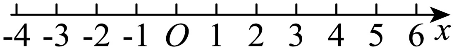

示例学校高二周测（9） Q5
题目

5．如图所示，已知一质点在外力的作用下，从原点O出发，每次向左移动的概率为(2)/(3)，向右移动的概率为(1)/(3)．若该质点每次移动一个单位长度，设经过5次移动后，该质点位于X的位置，则P(X>0)=（ ）A．(50)/(243) B．(17)/(81) C．(52)/(243) D．(2)/(9)
答案与解析
5．B【详解】方法一：依题意，当X>0时，X的可能取值为1,3,5，所以P(X>0)=P(X=5)+P(X=3)+P(X=1)=((1)/(3))^5+C_5^1((1)/(3))^4((2)/(3))+C_5^2((1)/(3))^3((2)/(3))^2=(17)/(81).
方法二：设5次移动中向右移动的次数为Y，则Y~B(5,(1)/(3)), 则
P(X>0)=P(Y=5)+P(Y=4)+P(Y=3)=…)
结构化摘要
{
"question_id": "szzx2024g2week9_q005",
"answer": "B",
"assets": [
{
"id": "img001",
"type": "image",
"rel_id": "rId6",
"source": "word/media/image1.png",
"path": "assets/szzx2024g2week9_q005_image_01.png"
}
],
"ole_objects": [],
"extraction": {
"source_paragraph_range": [
12,
13
],
"solution_paragraph_range": [
8,
10
],
"formula_count": 15,
"image_count": 1,
"ole_count": 0,
"quality_flags": [
"contains_images",
"contains_omml"
]
}
}